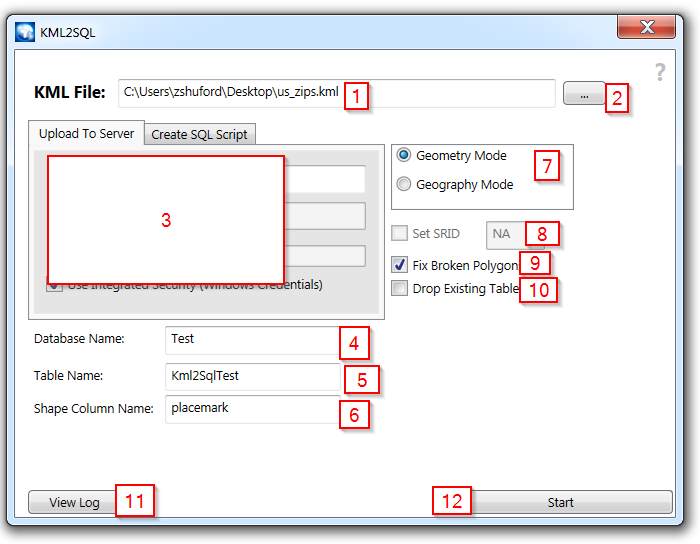
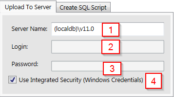
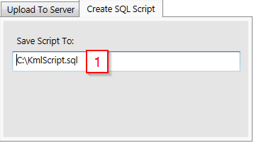

KML2SQL Desktop Client Documentation.
Welcome to the Kml2Sql Docs Page! I like to think the program is pretty self-explanatory, but below you'll find a full explanation.
What Does KML2SQL Do?
KML2SQL takes KML files and puts them into SQL. For instance, let's say you have a KML file containing data on every county in North Carolina.
The KML file is a series of
placemarks. Each placemark contains the following:
- A geographical object (in this case, a polygon denoting the borders of the county.
- The county's name, population, and medium income.
Using KML2SQL to upload this file, you would get a table in SQL Server that looked like this:
| Id | Name | Population | MediumIncome | Polygon |
| 1 | Gaston | 500,000 | 33,000 | 0xE610... |
| 2 | Mecklenburg | 1,000,000 | 33,000 | 0xE870... |
| 3 | Cleveland | 120,000 | 25,000 | 0xE120... |
| Etc... |
KML2SQL can be either to do this directly, or by creating a SQL Script for you to run. Once you get that, you can do all kinds of things, like check if the polygons intersect.
You can even view the results in the "Spatial results" tab of SQL Management Studio.

How To Use KML2SQL
Let's walk though what each optoin in the UI does:

- KML File: The KML file you want to input to SQL.
- File Picker: The file picker for the KML file.
- Upload/Script Panel: Options for either uploading placemarks to SQL or generating script. See below for more info.
- Database Name: The name of the database the file will be uploaded to.
- Table Name: The name of the table that the KML file will be uploaded to.
- Shape Column Name: The name of the column that will store the shapes.
- Polygon Type: Geography type is intended for plotting points of the Earth (ie, on a sphere), but it can be more fiddly, and Gemoetry usually works just fine.
See this page for more information.
- SRID: The SRID for any Geography polygons. If you don't know what this means, you can probably ignore it or use the defaults.
You might want to check out this page for mor information.
- Fix Broken Polygons: If your KML file contains invalid polygons, where the start point is not the same as the end point, this option will 'close' those invalid polygons.
- Drop Existing Table: Use if you want KML2SQL to drop the old table for you before uploading the new data.
- View Logs: Open the folder containing the logs
- Start: Press to start. :D
Upload Panel

When this panel is selected, the file will be directly uplaoded to SQL. It's contents are as follows:
- Server Name: The name of the server on the network (eg "myserver.foo.com")
- Login: Your login name.
- Password: Your password.
- Use Integrated Security: Automatically log in with Windows credentials (login/password not used if this is checked.).
Save Script Panel

When this panel is selected, the KML file will be parsed an a SQL Script will be output that you can run yourself. It contains only one item:
- Save Script To: The file that will be output.
Questions and Bugs
Since you probably want to get in touch with me because something isn't working right, the best way to get in touch is to
Submit an Issue
If you want to get in touch with me about something else feel free to email me at me@zachshuford.com,
but honestly tweeting me @Pharylon might be the best place to make sure I see it.